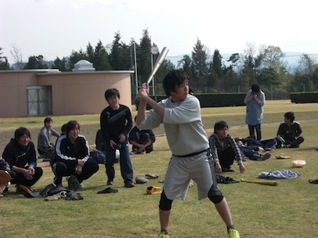
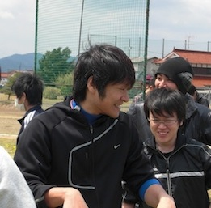
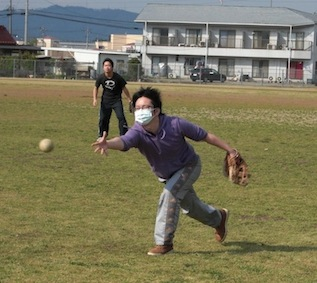
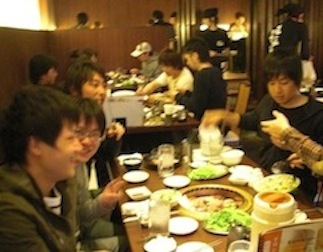

2011 年春 物理科学科ソフトボール大会
4 月 24 (日)、2011年物理科学科ソフトボール春大会が行われた。予選リーグでは、柵越えホームランを放つなど、打線が大爆発した光物性チーム。見事、リーグトップで決勝トーナメントへと駒を進めた。決勝トーナメント初戦の相手はなんと盟友である放射光チーム。守備の乱れにより大量点を入れられ、頼みの打線も不発に終わった光物性チームは、放射光チームに敗れた。4位という結果を収めた光物性は、焼き肉で打ち上げを行い、さらに結束を高めた。
|  さあ来い！ |
 主砲児玉が大活躍 |
|  ナイスピッチング！ |
 肉うめぇ |